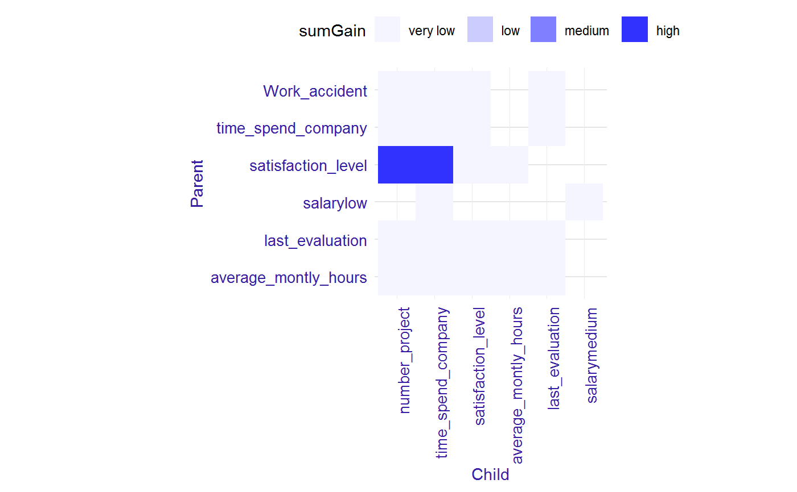
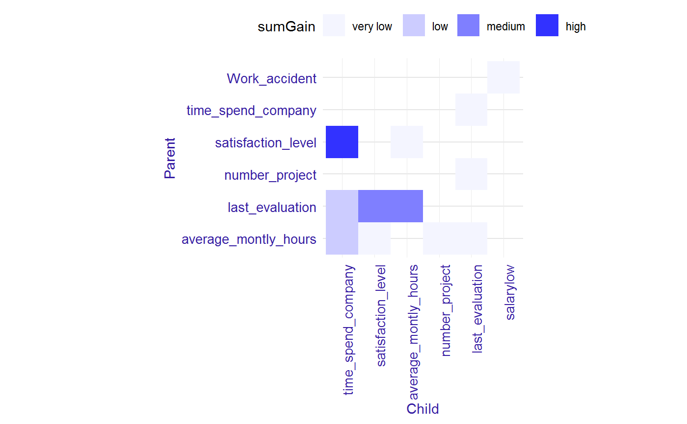
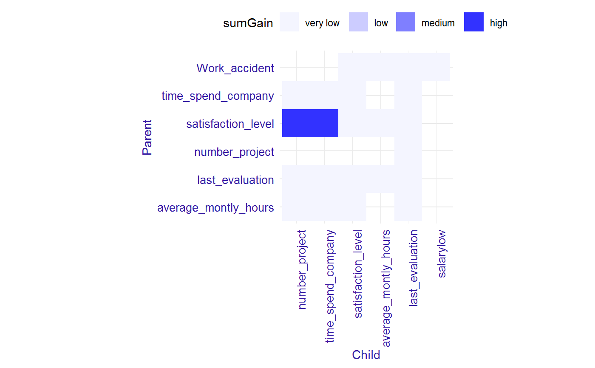

Importance of interactions and pairs in the model
This function calculates a table with two measures of importance for interactions and pairs in the model.
interactions(xgb_model, data, option = "interactions")
Arguments
| xgb_model | a xgboost or lightgbm model. |
|---|---|
| data | a data table with data used to train the model. |
| option | if "interactions", the table contains interactions, if "pairs", this table contains all the pairs in the model. Default "interactions". |
Value
a data table
Details
Available measures:
"sumGain" - sum of Gain value in all nodes, in which given variable occurs,
"freqency" - number of occurrences in the nodes for given variable.
NOTE: Be careful use of this function with option="pairs" parameter,
because high gain of pair can be a result of high gain of child variable.
As strong interactions should be considered only these pairs of variables,
where variable on the bottom (child) has higher gain than variable on the top (parent).
Examples
library("EIX") library("Matrix") sm <- sparse.model.matrix(left ~ . - 1, data = HR_data) library("xgboost") param <- list(objective = "binary:logistic", max_depth = 2) xgb_model <- xgboost(sm, params = param, label = HR_data[, left] == 1, nrounds = 50, verbose=0) inter <- interactions(xgb_model, sm, option = "interactions") inter#> Parent Child sumGain frequency #> 1: last_evaluation average_montly_hours 745.59427 2 #> 2: last_evaluation satisfaction_level 708.87227 4 #> 3: last_evaluation time_spend_company 634.99841 3 #> 4: satisfaction_level time_spend_company 559.99852 2 #> 5: last_evaluation number_project 390.18976 1 #> 6: average_montly_hours time_spend_company 318.01422 2 #> 7: average_montly_hours last_evaluation 312.10882 2 #> 8: average_montly_hours number_project 174.18143 1 #> 9: average_montly_hours satisfaction_level 169.90201 1 #> 10: satisfaction_level average_montly_hours 168.38992 1 #> 11: satisfaction_level last_evaluation 131.79431 1 #> 12: time_spend_company last_evaluation 112.06530 2 #> 13: satisfaction_level number_project 87.09535 1 #> 14: time_spend_company number_project 39.78419 1 #> 15: number_project last_evaluation 19.02951 1 #> 16: salarylow salarymedium 14.38998 1plot(inter)inter <- interactions(xgb_model, sm, option = "pairs") inter#> Parent Child sumGain frequency #> 1: satisfaction_level number_project 3573.869457 6 #> 2: satisfaction_level time_spend_company 3421.167467 5 #> 3: satisfaction_level satisfaction_level 1078.148020 10 #> 4: last_evaluation average_montly_hours 843.872006 4 #> 5: last_evaluation satisfaction_level 826.747874 6 #> 6: last_evaluation time_spend_company 651.903801 4 #> 7: time_spend_company time_spend_company 446.774647 3 #> 8: last_evaluation number_project 399.432373 3 #> 9: average_montly_hours satisfaction_level 346.017090 5 #> 10: average_montly_hours time_spend_company 334.233343 3 #> 11: average_montly_hours last_evaluation 312.108822 2 #> 12: average_montly_hours average_montly_hours 229.242862 6 #> 13: average_montly_hours number_project 188.761345 3 #> 14: satisfaction_level average_montly_hours 168.389923 1 #> 15: satisfaction_level last_evaluation 131.794312 1 #> 16: last_evaluation last_evaluation 125.887398 1 #> 17: Work_accident number_project 119.155579 1 #> 18: time_spend_company last_evaluation 112.065304 2 #> 19: salarylow time_spend_company 80.271004 1 #> 20: time_spend_company number_project 67.291999 3 #> 21: salarylow salarymedium 59.674581 2 #> 22: Work_accident time_spend_company 54.700195 1 #> 23: Work_accident satisfaction_level 39.800945 3 #> 24: number_project salarylow 28.924757 1 #> 25: number_project last_evaluation 19.029507 1 #> 26: time_spend_company satisfaction_level 16.250031 1 #> 27: salarylow Work_accident 11.632748 1 #> 28: Work_accident last_evaluation 6.214535 1 #> 29: number_project satisfaction_level 3.267536 2 #> Parent Child sumGain frequencyplot(inter)library(lightgbm) train_data <- lgb.Dataset(sm, label = HR_data[, left] == 1) params <- list(objective = "binary", max_depth = 2) lgb_model <- lgb.train(params, train_data, 50) inter <- interactions(lgb_model, sm, option = "interactions") inter#> Parent Child sumGain frequency #> 1: satisfaction_level time_spend_company 2434.0047 3 #> 2: last_evaluation satisfaction_level 1595.2254 5 #> 3: last_evaluation average_montly_hours 1328.0190 3 #> 4: last_evaluation time_spend_company 1042.6180 2 #> 5: average_montly_hours time_spend_company 819.9025 2 #> 6: average_montly_hours number_project 453.4923 1 #> 7: average_montly_hours last_evaluation 419.0138 1 #> 8: number_project last_evaluation 411.0702 2 #> 9: time_spend_company last_evaluation 341.3317 1 #> 10: average_montly_hours satisfaction_level 292.9402 2 #> 11: satisfaction_level average_montly_hours 117.5836 1 #> 12: Work_accident salarylow 101.0511 1plot(inter)inter <- interactions(lgb_model, sm, option = "pairs") inter#> Parent Child sumGain frequency #> 1: satisfaction_level number_project 9845.23985 21 #> 2: satisfaction_level time_spend_company 8171.72215 11 #> 3: satisfaction_level satisfaction_level 2052.78421 5 #> 4: last_evaluation satisfaction_level 1676.85531 6 #> 5: last_evaluation average_montly_hours 1328.01895 3 #> 6: last_evaluation time_spend_company 1167.64834 4 #> 7: time_spend_company time_spend_company 1161.58576 6 #> 8: average_montly_hours time_spend_company 819.90253 2 #> 9: time_spend_company last_evaluation 612.09506 2 #> 10: average_montly_hours number_project 485.28049 4 #> 11: average_montly_hours last_evaluation 419.01379 1 #> 12: number_project last_evaluation 411.07022 2 #> 13: average_montly_hours satisfaction_level 390.77878 3 #> 14: satisfaction_level last_evaluation 251.55655 10 #> 15: Work_accident last_evaluation 135.70107 1 #> 16: last_evaluation last_evaluation 130.07451 1 #> 17: Work_accident average_montly_hours 120.72714 1 #> 18: satisfaction_level average_montly_hours 117.58363 1 #> 19: Work_accident salarylow 101.05111 1 #> 20: time_spend_company number_project 78.45094 7 #> 21: Work_accident satisfaction_level 36.56250 3 #> 22: last_evaluation number_project 27.50140 4 #> 23: time_spend_company satisfaction_level 10.43890 1 #> Parent Child sumGain frequencyplot(inter)